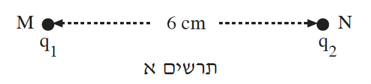
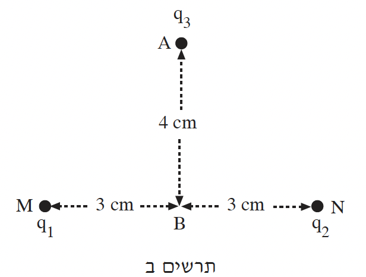

בתרשים א מוצגים שני גופים נקודתיים טעונים, המוחזקים במנוחה בנקודות \(M\) ו- \(N\). מטעני הגופים הם \(q_1 = q_2 = +2 \cdot 10^{-6} \text{ C}\), והמרחק בין הנקודות הוא \(6 \text{ cm}\). הפוטנציאל באין-סוף נבחר כאפס.

א.האם לאורך הקטע \(MN\) יש נקודה שבה השדה החשמלי מתאפס? נמקו. (5 נקודות)
ב.האם לאורך הקטע \(MN\) יש נקודה שבה הפוטנציאל החשמלי מתאפס? נמקו. (5 נקודות)
נקודה \(B\) היא אמצע הקטע \(MN\). נקודה \(A\) נמצאת על האנך האמצעי לקטע \(MN\), במרחק \(4 \text{ cm}\) מ- \(B\) (ראו תרשים ב).

מציבים בנקודה \(A\) גוף נקודתי שמטענו \(q_3 = -3 \cdot 10^{-6} \text{ C}\) ומסתו \(m = 2 \cdot 10^{-10} \text{ kg}\) ומחזיקים אותו במנוחה.
ג.חשבו את האנרגיה הפוטנציאלית החשמלית של הגוף שמטענו \(q_3\) בהיותו בנקודה \(A\). (10 נקודות)
משחררים ממנוחה את הגוף שמטענו \(q_3\) הנמצא בנקודה \(A\). הזניחו את כוח הכובד הפועל עליו.
ד.(1) חשבו את הגודל של מהירות הגוף בהגיעו לנקודה \(B\). (5 נקודות)
(2) תלמיד טוען שהמהירות הגדולה ביותר של הגוף לאורך מסלול תנועתו היא בהגיעו לנקודה \(B\).
האם טענתו נכונה? נמקו. (\(8 \frac{1}{3}\) נקודות)